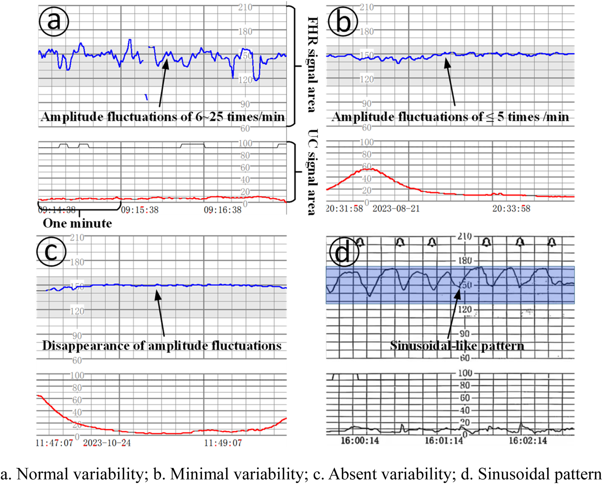
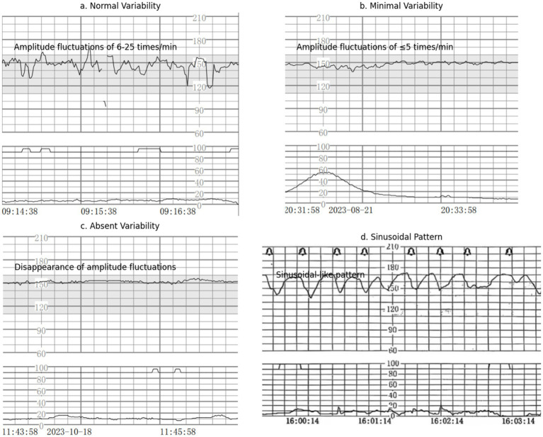

Página 5 · Vigilância aguda e cardiotocografia
Parâmetro 2: a variabilidade (e o alarme do sinusoidal)
Existe um erro grave que derruba residente e mata a prova: indicar cesárea por perda de variabilidade sem excluir o sono fetal — abrir o útero e encontrar um feto que apenas dormia. Antes de pensar em cesárea diante de um traçado que parou de oscilar, há coisas a excluir. A página é sobre elas.
O que é variabilidade
Variabilidade é a diferença entre o maior e o menor batimento na média, desconsiderando as acelerações e desacelerações transitórias. É o quanto o batimento "treme" em torno da linha de base — a assinatura de um sistema nervoso autônomo ativo e um feto bem oxigenado.
Micro × macro-oscilação
Há duas escalas de oscilação. A micro-oscilação (variação batimento a batimento) só é observável na cardiotocografia computadorizada, que não é obrigatória. O aparelho usual das maternidades registra a macro-oscilação. E o que importa: micro e macro funcionam igualmente bem para o julgamento clínico; o aparelho comum é muito mais barato e é o que aparece na prova. Não se perca decorando micro-oscilação: a prova usa a macro.
Variabilidade moderada = 6–25
A variabilidade moderada é a diferença de 6 a 25 bpm entre o maior e o menor batimento — é a ideal. Era antigamente chamada de "padrão ondulatório". Esse é o alvo: um traçado que sobe e desce numa faixa de 6 a 25 bpm mostra um feto reativo e oxigenado.
Variabilidade aumentada > 25
Acima de 25 bpm, é variabilidade aumentada (o NICHD chama de "marcada"). Não é asfixia, mas também não é o ideal. Exemplo que a banca adora: um traçado que oscila entre 110 e 160 repetidamente varia 50 bpm — está dentro da linha de base normal (110–160), porém com variabilidade excessiva. Repare na sutileza: linha de base normal e variabilidade anormal podem coexistir.
Interativo: deslize a amplitude e veja a assinatura do traçado mudar de faixa.
Deslize a amplitude (maior − menor batimento) e o traçado muda de faixa em tempo real: perda/mínima ≤5, moderada 6–25 (ideal), aumentada >25. Cada hotspot revela o nome e o significado clínico — a manipulação ativa fixa a diferença fina.Perda de variabilidade ≤ 5
Abaixo de 5 bpm, tem-se a perda de variabilidade, que pode ser mínima (amplitude detectável ≤5 bpm) ou ausente (quando não se observa mais nenhuma oscilação — amplitude indetectável). É o achado que assusta — e o que exige a conduta correta da página.
As três causas da perda
A perda de variabilidade tem três causas, e decorá-las é o que impede a cesárea precipitada: asfixia, medicação materna interferindo no SNC fetal, ou sono fetal. Só uma das três é catástrofe; as outras duas são benignas e reversíveis.
A primeira conduta: excluir o benigno
Por isso, diante da perda de variabilidade, a primeira conduta é excluir as causas benignas — antes de pensar em asfixia. Faz-se estímulo mecânico ou acústico para descartar sono fetal (é a "buzinada": um estímulo sonoro para acordar o feto) e checa-se a medicação materna. Só depois de excluir medicação e sono, com movimentação e variabilidade que não retornam, o quadro é de fato preocupante. O erro grave — o que a abertura denunciou — é operar por perda de variabilidade sem excluir sono: abrir o útero e achar um feto que dormia.
O padrão sinusoidal
Um alerta à parte, que não se confunde com nada: o padrão sinusoidal — monótono, regular, com aparência de "vários sinos" iguais — sugere anemia fetal grave. Não confundir com a variabilidade moderada (a antiga "ondulatória"): o sinusoidal é regular e liso demais, patológico. Não é exclusivo da doença hemolítica, mas indica anemia fetal em estágio grave. (A doença hemolítica/anemia fetal e sua imunoglobulina são tema de outro recorte da trilha — aqui, apenas o reconhecimento do padrão.)

Um alerta à parte, de alto rendimento: o padrão sinusoidal — monótono, regular, com aparência de "vários sinos" iguais — sugere anemia fetal grave.
No painel d, a FCF forma ondas suaves, repetidas, de amplitude e frequência semelhantes (3–5 ciclos/min, sem acelerações). Não confunda com a variabilidade moderada saudável (irregular, serrilhada): o sinusoidal é organizado demais, quase mecânico — regular, monótono e patológico.
Fonte: Qiu T et al., AI-augmented prenatal care, Front Physiol 2025, Fig. 1 (painel d) — CC BY · página de origem

O achado que assusta e exige excluir o benigno: a variabilidade some, a linha da FCF fica lisa/achatada, amplitude ≤5 bpm.
Nos painéis B e C, a linha superior do FHR oscila muito pouco (B) até praticamente desaparecer (C). Isso pode refletir depressão do SNC por hipóxia — mas, antes de tratar como patológico, exclua sono fetal, medicação (magnésio, opioides) e sinal técnico ruim. Distinção-chave: o sinusoidal (painel D) não é linha lisa; é ondulado e regular.
Fonte: Wang X et al., Front Med 2026, Fig. 1 (painéis B/C) — CC BY 4.0 · página de origem
Quiz — fixação
Traçado com perda de variabilidade (≤5 bpm) numa gestante que recebeu sulfato de magnésio e cujo feto pode estar em ciclo de sono. Qual a primeira conduta?
- B) Correta. A perda de variabilidade tem 3 causas (asfixia, medicação, sono); duas são benignas. Exclui-se o benigno antes de operar — a lição-mãe da página.
- A) O erro grave que a página existe para evitar. Operar feto que talvez só dormia ou estava sob medicação — a perda "parece" catástrofe imediata.
- C) Confunde estimular o feto com estimular o útero. Ocitocina aumenta contração e estresse fetal; pioraria o quadro e não "acorda" o feto — o estímulo é acústico.
- D) Copia a periodicidade crônica para um cenário agudo. Perda de variabilidade intraparto é achado agudo; adiar uma semana é incompatível.
Um traçado monótono, regular, com ondas uniformes em "vários sinos", numa gestante com suspeita de aloimunização. O padrão e seu significado são:
- B) Correta. A regularidade monótona em "sinos" iguais é o sinusoidal — bandeira de anemia fetal grave, a não confundir com a ondulatória saudável.
- A) A distinção fina é regularidade × irregularidade. A moderada/ondulatória é irregular e saudável; o sinusoidal é regular e patológico — ambos "ondulam".
- C) Joga com "padrão anormal" genérico. A aumentada é oscilação ampla e irregular (>25), não a regularidade monótona do sinusoidal.
- D) Usa uma causa benigna verdadeira no padrão errado. Sono dá perda de variabilidade (linha achatada), não ondas regulares; e a aloimunização aponta anemia.
Depois do parâmetro que assusta quando some, o parâmetro que tranquiliza quando aparece — e a assimetria lógica que a banca ama: se acelerar é bom, será que não acelerar é ruim?